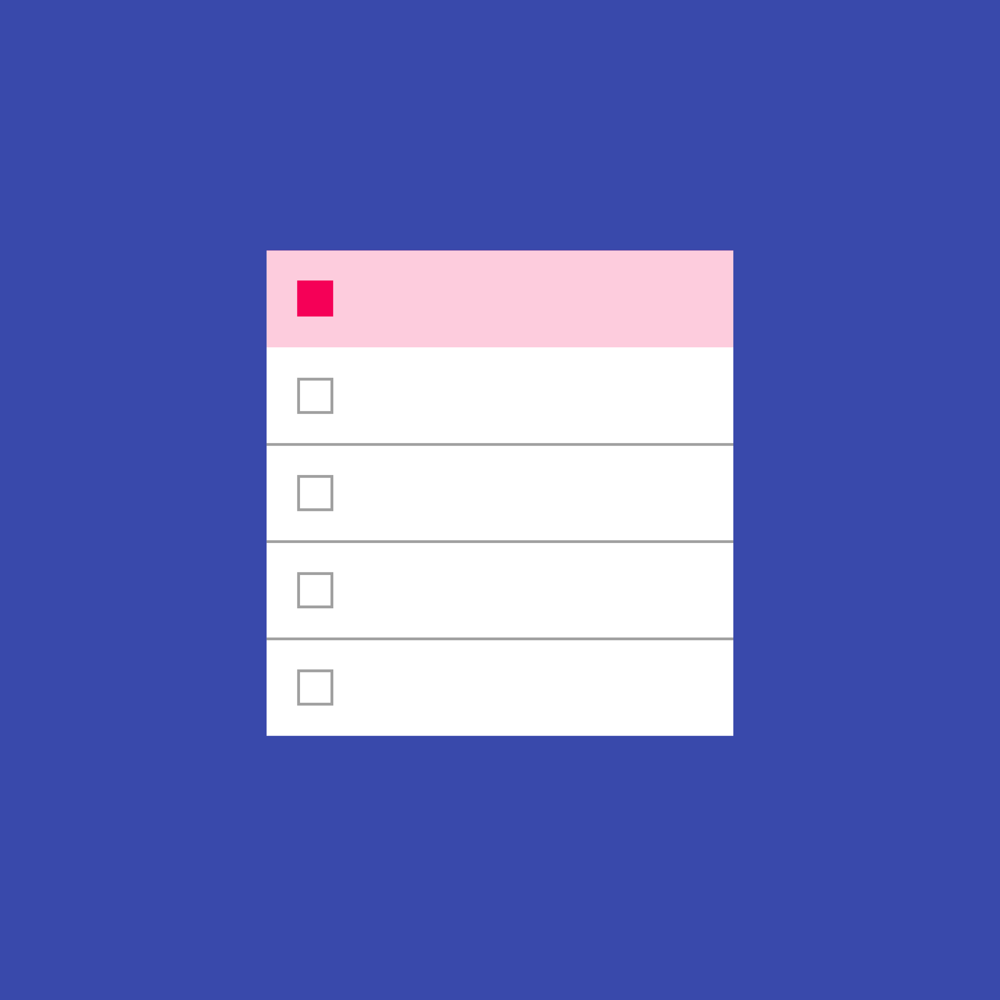

数据表格展示原始的数据组。它们通常出现在桌面端的企业产品中。
数据表格可以嵌入到其他元素中，例如卡片。它们可以包含：
- 相关的可视化数据
- 用户可以查询和操作数据
卡片中的数据表格，可以在顶部和底部显示导航和数据操作工具。

数据表格展示原始的数据组。它们通常出现在桌面端的企业产品中。
数据表格可以嵌入到其他元素中，例如卡片。它们可以包含：
卡片中的数据表格，可以在顶部和底部显示导航和数据操作工具。
数据表格在顶部有包含列名称的表头，下面是数据行。
如果需要对选择的数据进行操作，应该为每一行添加一个复选框。
数据表格可以包含：
基本的数据表格
表格内容
13sp Roboto Regular
87% black
列标题
12sp Roboto Medium
54% black
文本对齐
数据列右对齐
文本列左对齐
当鼠标悬停在行上时，在该行上显示背景色。如果个别的单元格有特殊的悬停状态，同时显示单元格和行的状态。
悬停背景色

鼠标悬停在行上
当数据行被选中时，在该行上显示一个背景色。
选中行的背景色
复选框

已选择的行
如果启用了列排序，默认对最重要的数据进行排序，并在列头部显示已排序的状态。如果用户点击一个已排序的列，则反转排序顺序、并旋转排序图标。
已排序的列名称
排序图标
按升序排列的表格
如果要对列标题提供更详细的解释，请在鼠标悬停时显示提示信息。如果启用了排序，在鼠标悬停时显示排序图标，以表明该列是可以排序的。
提示信息
排序图标
鼠标悬停在列名称上
有时，列名称无法适应推荐的 56dp 列间距。有两个办法来处理这种情况：
对太长的列名称进行截断，并用省略号代替
鼠标悬停在截断的列名称上
表格可能需要基本的文本编辑功能（编辑已有的文本内容或添加评论）。在表格中使用可编辑字段，并通过占位符文本进行提示。可以在点击时显示一个只含文本框的小型编辑框，或者显示一个完整的对话框组件。
占位符文本
小型编辑框
简单、含单个文本框的编辑框
大型编辑框
复杂、灵活的编辑框
单元格内的编辑图标

（可选）使用图标进行编辑提示。在单元格内容的另一边放置图标。
除了编辑文本，用户可能还需要从下拉菜单中选择选项，在这种情况下，可以将菜单组件直接嵌入到表格中。
单元格内的菜单

含有菜单的表格
展开的菜单
表格可以嵌入到表格中，并在顶部和底部显示导航和数据操作工具。

带头部和底部的表格卡片
Card title
20sp Roboto Regular
87% black
卡片操作图标（头部和底部上）
24dp（包含容器）
54% black
底部分页标签
12sp Roboto Regular
54% black
有些表格卡片可能需要带有操作的头部，而不需要带标题的头部。这种情况下，你可以：

表格卡片中的替换头部
操作按钮
使用无边框的按钮
使条目能被选择
有颜色色的头部
使用 50 的强调色作为背景色进行填充
显示选中条目的数量
在有条目被选中后，显示可用的操作图标n

数据表格卡片的垂直间距以及它的最后一行
表格卡片中元素之间的水平间距
列与列之间的边距